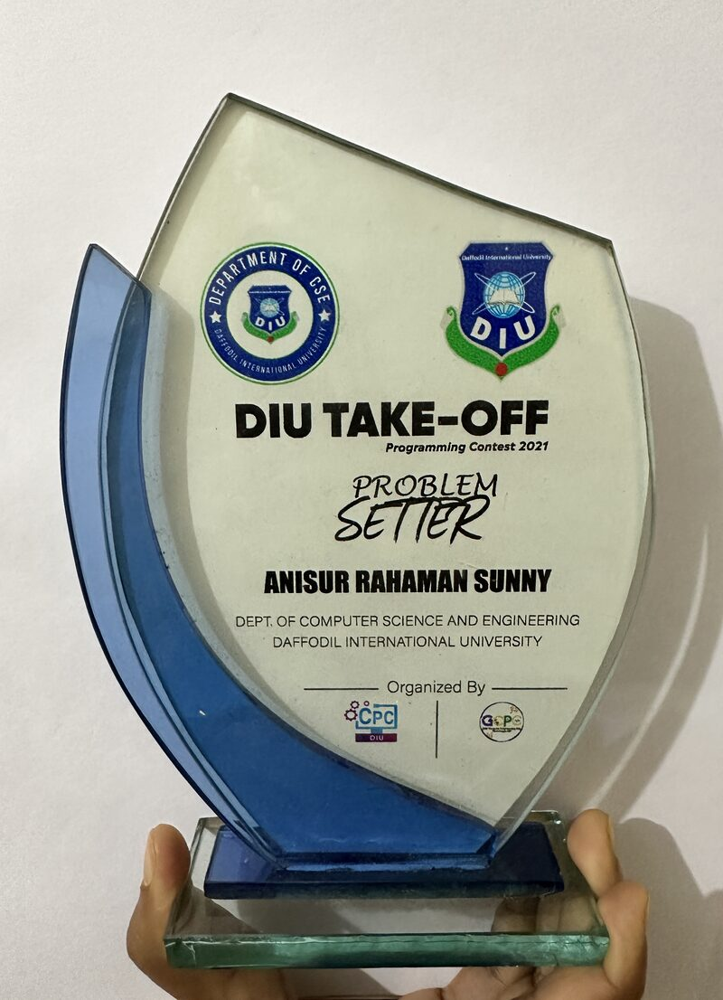
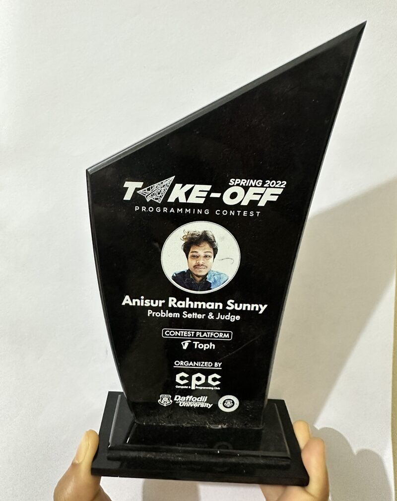
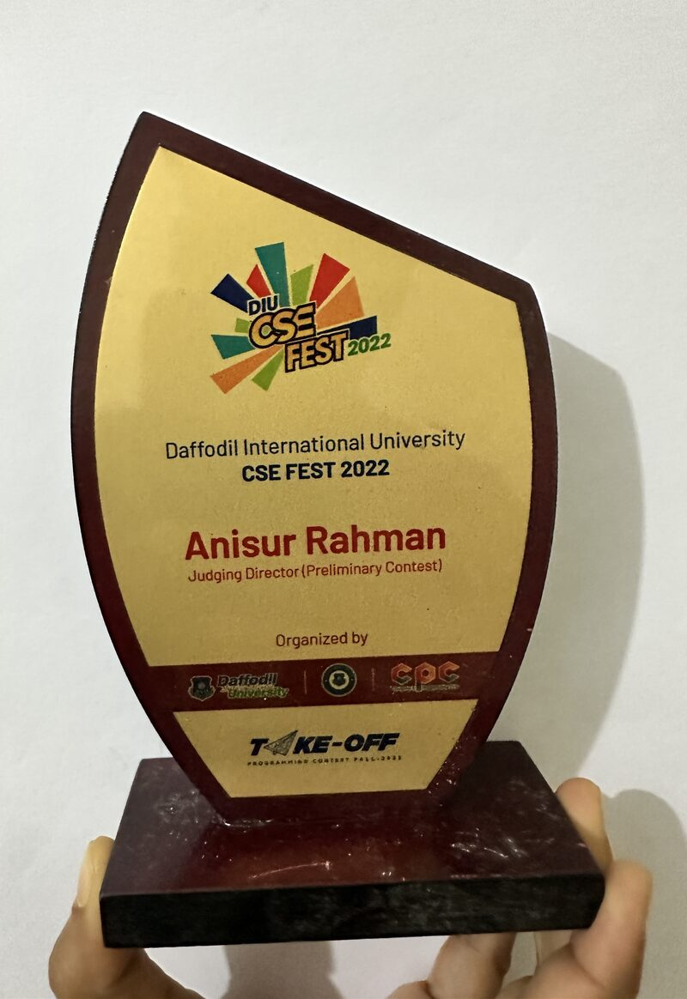
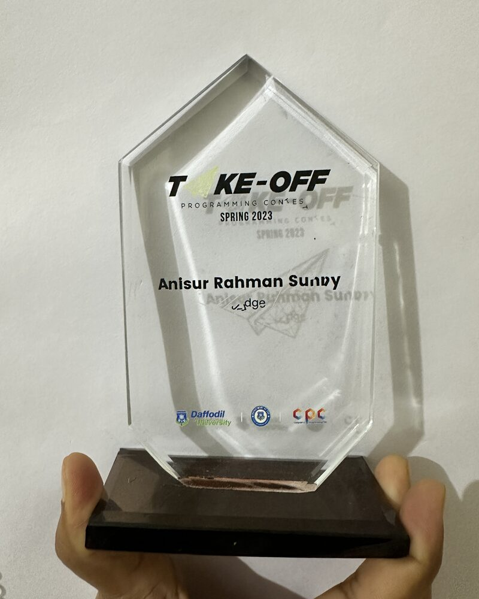

I design and operate the distributed storage and database systems that run modern data centers — replicated controllers, point-in-time recovery, and multi-terabyte data movement at cloud scale. I'm seeking a fully-funded systems PhD in the U.S. to take these production problems into rigorous research on distributed systems, databases, and storage.
Three years of running databases and disaster recovery at scale left me with concrete open questions. My PhD focus: distributed systems, databases, storage, and data-center infrastructure.
Consensus · replication · failure recovery
WAL · PITR · behavior under partial failure
Block & object · CSI · snapshots · offload
Operators · reconcilers · multi-cloud control planes
Bare-metal K8s · Rook-Ceph · storage fabrics
Backup · DR · failover · RPO/RTO limits
Disaster recovery for databases, workloads, and entire clusters on Kubernetes. Led design-to-release ownership for 2.5 years.
Problem → one controller cannot back up a fleet inside a single backup window — state tracking, retries, and status updates all serialize on it.
WAL archival and restoration with Point-in-Time Recovery for databases in the cloud.
Problem → a nightly backup loses a day; production needs recovery to an arbitrary second — across pods that come and go.
Restic-based volume-snapshot feature for Kubernetes PVCs.
High-performance data-migration engine for PostgreSQL & MySQL.
A Kubernetes controller that manages a queue of distributed tasks across the cluster.
Published work in applied machine learning and computer vision.
A classification-based approach to fabric defect detection benchmarking four CNN architectures — ResNet50, VGG16, MobileNetV2, and InceptionV3 — across nine defect categories using transfer learning, with ResNet50 reaching 99.39% accuracy for real-time textile quality control.
Merged contributions to WAL-G, Stash, go-shell, and the IBM Multi-Cloud Gateway.
Blog posts and deep dives, plus engineering articles, webinars, and documentation on managing databases and disaster recovery in Kubernetes.
How continuous WAL shipping to object storage makes PITR possible for managed databases.
The parallel, snapshot-based pipeline behind a fast RDS → DBaaS migration.
Sharded operators that fan work across thousands of concurrent backups.
2000+ problems solved across Codeforces, AtCoder, UVa, and SPOJ — the analytical groundwork behind the systems.
After competing, I gave back — setting problems and judging university programming contests.




Distributed systems, databases, storage, and data-center infrastructure. I'd love to talk about your group's work and how my production experience could fit your lab.